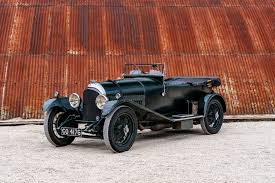
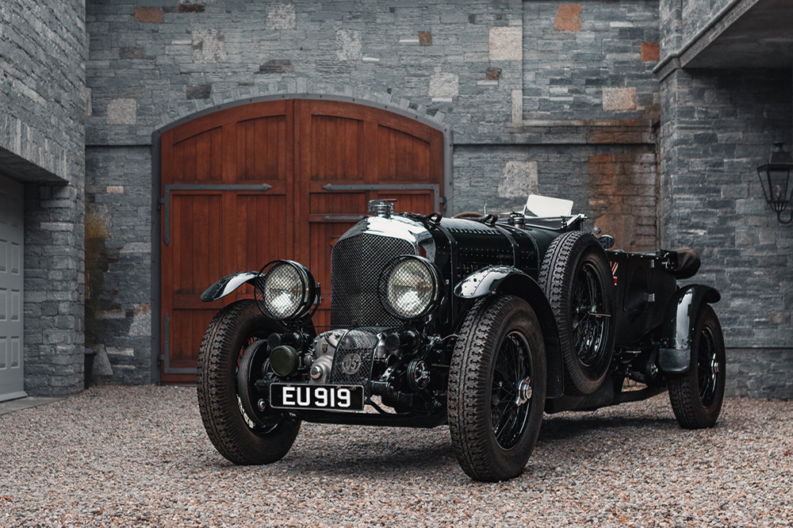
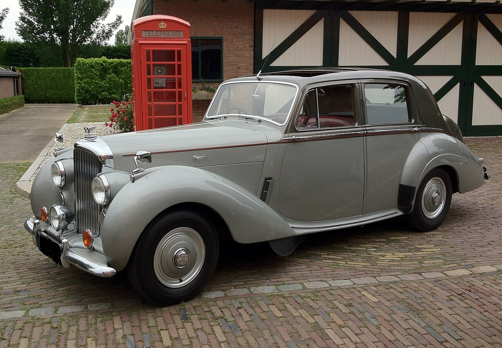
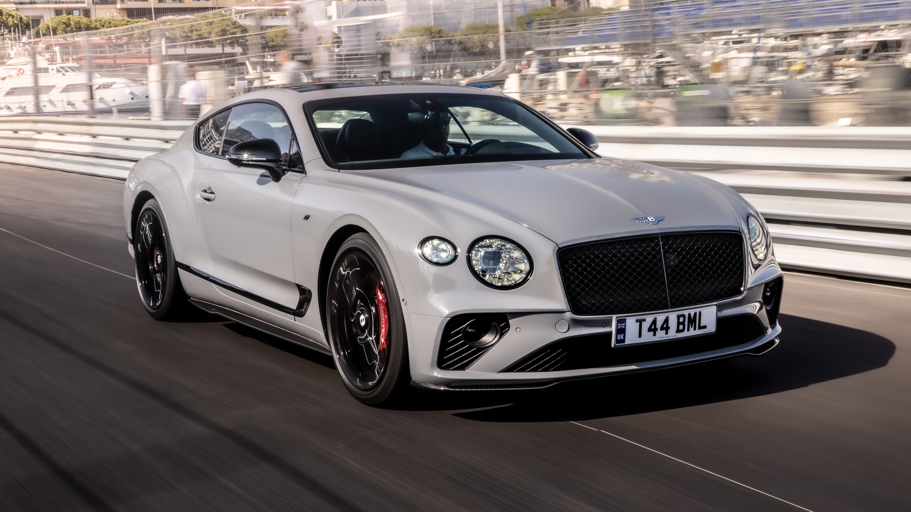
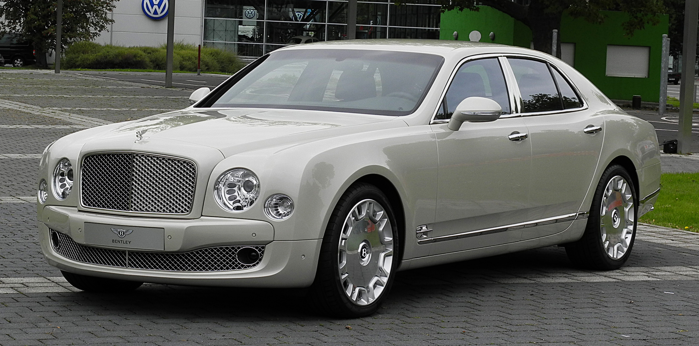
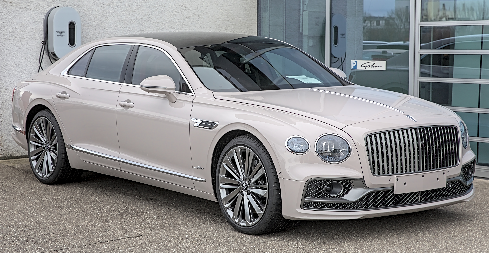
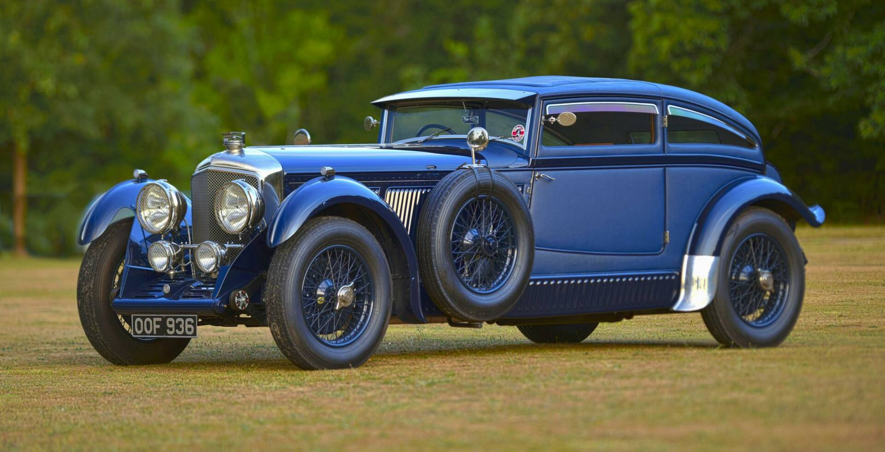
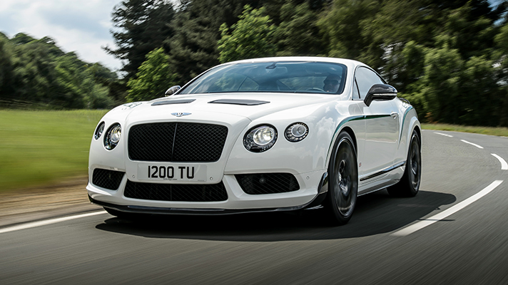
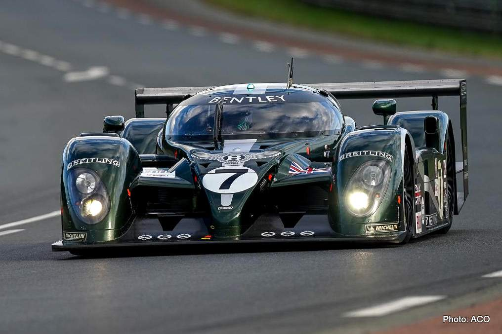

Bentley
The World's Most Luxurious Grand Tourers
Founded: 1919
Country: UK
Icon: Continental GT
British Luxury
The World's Most Luxurious Grand Tourers
Bentley Motors was founded in 1919 by Walter Owen Bentley, known as W.O. Bentley. His vision was simple: "To build a fast car, a good car, the best in class." From the beginning, Bentley combined luxury with performance in a way no other manufacturer had.
The first Bentley, the 3-Litre, debuted in 1921. It was an immediate success in racing, winning at Brooklands and Le Mans. W.O.'s engineering philosophy focused on durability and performance – his cars were built to last and to win.
The 1920s were Bentley's golden age of racing. The "Bentley Boys" – a group of wealthy, aristocratic British drivers – campaigned Bentleys at Le Mans, winning five times between 1924 and 1930. The 1927 3-Litre, 1928 4½ Litre, and the legendary 6½ Litre "Speed Six" dominated.
The 1929 4½ Litre "Blower" Bentley, supercharged by Sir Henry Birkin, became an icon despite limited racing success. Its aggressive appearance and distinctive supercharger sound made it legendary.
The Great Depression hit Bentley hard. Rolls-Royce acquired Bentley in 1931, moving production to Derby. For decades, Bentleys became "Rolls-Royces with a different badge" – luxurious but less sporting. The 1952 R-Type Continental was an exception – a stunning fastback grand tourer that defined the GT category.
In 1998, Volkswagen AG acquired Bentley in a dramatic battle with BMW. VW invested billions in a new factory at Crewe, returning Bentley to its sporting roots. The 2003 Continental GT, with its W12 engine and stunning design, relaunched Bentley as a global luxury powerhouse.
Today, Bentley offers the Continental GT, Flying Spur, Bentayga SUV, and Mulsanne flagship. Each is handcrafted in Crewe, combining exquisite materials with immense performance. The brand is transitioning to electrification while maintaining its core values of luxury, performance, and craftsmanship.
"To build a fast car, a good car, the best in class."- W.O. Bentley

1921-1929
The first Bentley. W.O.'s masterpiece – a 3.0L four-cylinder with overhead cam, four valves per cylinder, and aluminum pistons. Advanced for its time and successful in racing.

1929-1931
The supercharged Bentley. Developed by Sir Henry Birkin against W.O.'s wishes. Loud, fast, and iconic. Only 55 built, now among the most valuable cars.

1952-1955
The first modern grand tourer. Fastback body, 120 mph top speed, and exquisite style. The "R" in R-Type stands for "Road Test" – it set the GT template.

2003-present
The car that saved Bentley. W12 power, stunning design, and handcrafted luxury. Over 80,000 sold – more than any previous Bentley combined.

1980-1992, 2010-2020
The flagship luxury sedan. Handcrafted in Crewe, V8 power, and unparalleled luxury. The ultimate Bentley for owners and chauffeurs alike.
2015-present
The first Bentley SUV. Controversial but brilliant – W12 power, off-road capability, and Bentley luxury. Now the brand's best-seller.

2005-present
The luxury sports sedan. Four doors, immense performance, and all the luxury of a Bentley.

1928-1930
The ultimate "Bentley Boy" car. 6.5L straight-six, 180 hp, and Le Mans winner in 1929 and 1930.
The Continental GT, launched in 2003, was Bentley's most important car since the 1920s. After Volkswagen's acquisition, Bentley needed a modern grand tourer that could compete with the best from Europe.
The Continental GT proved that a luxury grand tourer could also be a genuine performance car. It defined the modern Bentley and remains the heart of the brand.

The "Bentley Boys" were a group of wealthy British gentlemen who raced Bentleys in the 1920s. They included Woolf Barnato (heir to the Barnato banking fortune), Sir Henry "Tim" Birkin (baronet and racing driver), and Glen Kidston. They were glamorous, daring, and successful.
Bentleys dominated at Brooklands, the world's first purpose-built motor racing circuit. The 1920s Bentleys were unbeatable on the high-speed oval.
Bentley returned to racing with the Continental GT3 in 2014, winning at Bathurst, Spa, and other GT circuits. The GT3 program continues today, proving Bentley's performance credentials.

Every Bentley is handcrafted at the company's factory in Crewe, England. The level of craftsmanship is extraordinary.
Each Bentley uses up to 10 hides of leather, all from northern European bulls (fewer insect bites). The hides are inspected by hand, cut with precision, and stitched by skilled craftspeople. The Continental GT has 300,000 stitches inside.
Bentley offers 10 different wood veneers, each taking 30 days to prepare. The wood is bookmatched – opened like a book to create symmetrical grain patterns. In the Flying Spur, the wood panels are cut from a single tree.
The knurling on Bentley's switches and vents is inspired by fine jewelry. The organ-stop air vents are machined from solid aluminum. Even the start-stop button is crafted with precision.
Bentley's bespoke division, named after the legendary coachbuilder. Mulliner can create virtually anything a customer desires – unique paint, embroidery, picnic hampers, even dog beds.
Each Bentley takes months to complete. The craftspeople at Crewe are among the most skilled in the world, passing down techniques through generations.